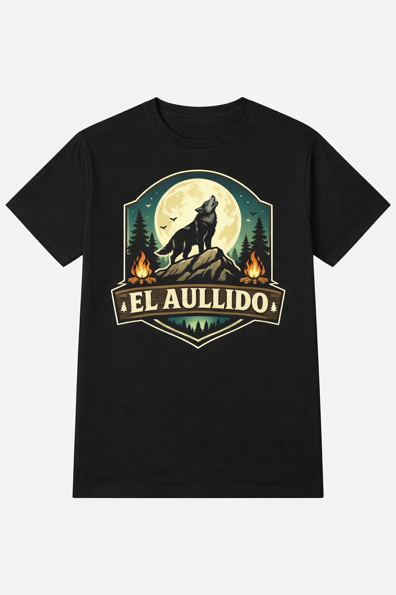

EL AULLIDO
Campamento de supervivencia en la naturaleza
Campamento de supervivencia en la naturaleza
El Aullido es un campamento de supervivencia para adultos situado en el Camping de Valdemaqueda. El objetivo es ofrecer una experiencia educativa y real en la naturaleza donde los participantes aprendan orientación, refugios, fuego, agua y técnicas de supervivencia real.
Desarrollar autonomía personal, mejorar la orientación en el medio natural, aprender técnicas de supervivencia real y fomentar el trabajo en equipo y el respeto por la naturaleza.
Email: elaullido.supervivencia@gmail.com
Teléfono: 600000000
Ubicación: Camping de Valdemaqueda (Madrid)
Nuestra marca "El Aullido" también cuenta con equipamiento y ropa oficial para los amantes de la supervivencia y la aventura. Diseños exclusivos inspirados en la naturaleza y el espíritu del campamento.



Mochilas, tazas, gorras y equipamiento personalizado con el logo de El Aullido.